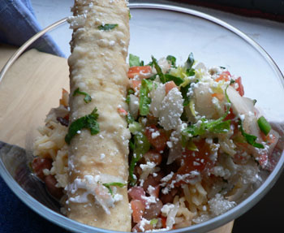

Pio Maya
Pio Maya
I had a tasty lunch the other day from Pio Maya, a small Mexican restaurant on West 8th Street. I read about it in New York last week, and I hoped it would be the first Mexican restaurant I would like in the city. Augieland wrote an excellent review back in December, and he makes the point that people like to ignore in New York City: We have become too willing to pay far too much for food that should cost very little. I understand that New York is more expensive, and everything from real estate to ingredients and labor costs more here. And for all I know, there is a thriving subset of Mexicans in Mexico spending $30 on their main course.
But I don’t think it works here. Most people who live here have spent enough time in California, another expensive state, to know that excellent Mexican food can be cheap. French food is supposed to be expensive; everything involved with French food is expensive: the training, the ingredients, the plates, the butter, the French-speaking staff. French food is expensive in France, and people are happy to pay for it there and here. It baffles me that we happily go out and spend $50 on chips, salsa, and Patron margaritas. I know that Mexico has a cuisine, and I’m sure there are beautiful dishes that are worth whatever they cost at Rosa Mexicano or Crema. But I think the draw is guacamole and margaritas, and I’m not going to waste my money.
To get back on track here, Pio Maya is a lovely little restaurant. Beautiful chickens are spinning on a rotisserie behind the counter, and one wall is full of dried beans and rice poured in layers behind a sheet of glass. I interrupted the owner’s lunch in the mid-afternoon, which he was sharing with his little boy, and ordered a few flautas to go. Ten minutes later I had a bag full of steaming rice and beans and perfectly crisp and flavorful flautas (total cost: $7). As I was leaving he said, “Thanks for coming. I hope you enjoy it.” How often does that happen with takeout?

And how often does takeout from 8th Street look this good?
Comments
I’m sure everything you say about Mexican food is true, but I seem to remember being pleasantly surprised at how inexpensively we could get a good meal in Paris. I do know the dollar was going a lot further there in 2000, but weren’t we getting full-course meals in nice little bistros for about $15, all-inclusive? (Not including wine, of course.)
That’s true. I guess there’s a big gap in French restaurants between cuisine and more rustic fare: Consommé versus pig’s trotters; boeuf
Add a comment